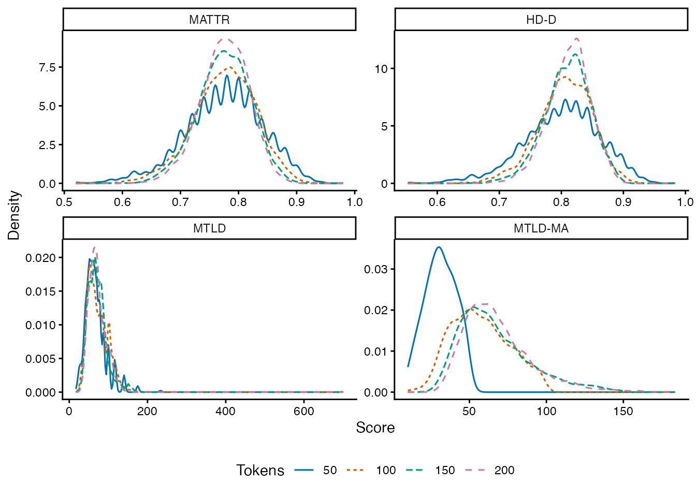
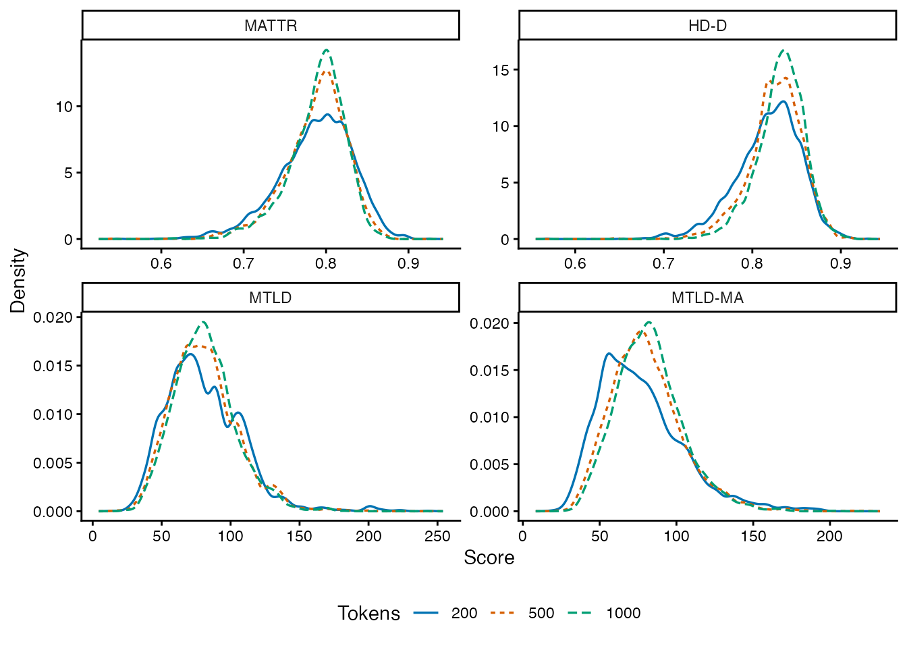

Choose the property you want to measure
For local lexical variety, start with MATTR at a fixed window size. The evidence below supports this starting choice for English surface-word analyses at window 50; other languages, word units and windows need their own checks. Use HD-D at a fixed sample size when you want a summary of the whole text’s frequency distribution that ignores word order. Use MTLD when sequential factor lengths answer your question or a study you are extending used the same definition. None of these choices, by itself, turns word counts into a measure of vocabulary knowledge or writing quality.
Being able to compute a score is a separate question from having enough text for the intended comparison. At window 50, a 50-token MATTR score is just one window’s TTR. Even at 100 tokens, the corpus results below do not support precise individual ranking. Group comparisons should retain writer/task structure and sampling uncertainty; averaging does not remove systematic differences in topics or text coverage.
| Question or constraint | Choice | Conditions that matter |
|---|---|---|
| How varied is vocabulary within local stretches? |
mattr, fixed window_length
|
Fix the window across texts. Texts below the window produce no score. Changing the window changes the property measured. |
| How diverse is the text’s frequency distribution? |
hdd, fixed sample_size
|
Fix the sample size. Order is ignored. Topic expansion and unequal coverage can still affect the result. |
| How long does a sequence maintain lexical variety? |
mtld, fixed threshold |
Inspect completed factors and tail contribution; short texts may be dominated by the tail calculation. Record the exact method ID. |
| Reproduce koRpus’s moving-average MTLD? | Explicit mtld_ma
|
This is a separate forward, overlapping, complete-factor method. It is often unavailable or strongly selected in short texts. |
| Compare type counts at exactly the same length? |
ttr with a controlled sampling design |
Preserve document and writer boundaries. A common length does not guarantee a reliable individual score. |
| Reproduce an existing segment-based study? |
msttr, fixed segment length |
Incomplete final segments are dropped; segment boundaries matter. |
| Study repetition/concentration? | yule_k |
Lower values indicate less concentration. This answers a different question from rare-word knowledge or local sequence variety. |
Do not select RTTR, CTTR, Herdan’s C, Maas or Yule’s I simply because
a formula adjusts TTR or uses logarithms. Their length behavior must
suit the comparison. The experimental expected_ttr_d fits
an exact expected-TTR curve; it is not CLAN VOCD and is excluded from
default computations.
Why these recommendations?
Covington and McFall (2010) define MATTR through a fixed moving window. This makes the unit of local comparison explicit, and allows variation inside a text to be inspected. It does not make different window sizes interchangeable. Original method.
Fergadiotis, Wright and Green (2015) compared four measures in discourse from 442 adults. Their modeling supported MTLD and MATTR more strongly than D and Maas with respect to length-related method variance. These were monolingual adult spoken samples in four discourse tasks, so that result is useful evidence, not a universal ranking for learner writing or other languages. Study.
Our package evaluation adds direct evidence for the implemented definitions in learner essays, academic assignments, general writing and conversation. It asks two separate questions: does a score shift as more of the same text is included, and does it agree across different sampled parts of that text? The second question matters even when the average score has little length dependence.
Evidence from 2,786 PELIC essays
The evaluation uses the fixed PELIC v1.0 corpus, original responses to essay questions in writing classes, retaining the first response per writer and prompt. This gives 2,786 essays, 696 writers, 297 prompts and 1,196,348 tokens. Tokenization uses the package’s English rules, NFC, lower case, surface words, and excludes numbers; spelling errors remain. Source file hashes and selection code are recorded in the reproduction directory.
For the controlled-length comparison, the same 1,330 essays from 421 writers with at least 400 tokens contribute at every length. Each essay supplies a uniformly selected pair of disjoint 200-token blocks. Nested prefixes give 50-, 100-, 150- and 200-token samples without reordering words. MATTR/MSTTR use 50, HD-D uses 42, and both MTLD methods use a strict threshold of .72. Selection and analysis were specified before examining metric outcomes.
Length sensitivity
These are means of all available block scores, with two sampled blocks per essay. An essay with only one computable block contributes only that block. MTLD-MA therefore has a changing observed subset; its missing counts must be read alongside its means. Paired length changes below instead require both blocks at both lengths to be computable and weight eligible essays equally.
| Measure | Tokens | Mean | Computed blocks | Missing blocks |
|---|---|---|---|---|
| ttr | 50 | 0.7749 | 2660 | 0 |
| ttr | 100 | 0.6692 | 2660 | 0 |
| ttr | 150 | 0.6068 | 2660 | 0 |
| ttr | 200 | 0.5631 | 2660 | 0 |
| msttr | 50 | 0.7749 | 2660 | 0 |
| msttr | 100 | 0.7749 | 2660 | 0 |
| msttr | 150 | 0.7754 | 2660 | 0 |
| msttr | 200 | 0.7761 | 2660 | 0 |
| mattr | 50 | 0.7749 | 2660 | 0 |
| mattr | 100 | 0.7758 | 2660 | 0 |
| mattr | 150 | 0.7751 | 2660 | 0 |
| mattr | 200 | 0.7759 | 2660 | 0 |
| mtld | 50 | 66.9529 | 2660 | 0 |
| mtld | 100 | 72.3674 | 2660 | 0 |
| mtld | 150 | 71.5452 | 2660 | 0 |
| mtld | 200 | 71.4649 | 2660 | 0 |
| mtld_ma | 50 | 31.1869 | 673 | 1987 |
| mtld_ma | 100 | 57.0482 | 2215 | 445 |
| mtld_ma | 150 | 66.3737 | 2623 | 37 |
| mtld_ma | 200 | 68.3238 | 2659 | 1 |
| hdd | 50 | 0.8005 | 2660 | 0 |
| hdd | 100 | 0.8054 | 2660 | 0 |
| hdd | 150 | 0.8095 | 2660 | 0 |
| hdd | 200 | 0.8124 | 2660 | 0 |
The curves show the original values at each length, using a common bandwidth and evaluation range within each measure. MTLD-MA curves include only computable blocks; the missing counts above identify the changing subset.

MATTR’s mean changed from .7749 to .7759. Its paired 200-minus-50 change was .00106, with a writer-cluster bootstrap 95% interval of −.00110 to .00326. MSTTR showed a similarly small average shift. This supports their use for length-heterogeneous local-variety comparisons at these settings.
HD-D increased from .8005 to .8124 despite keeping the sample size at 42; its paired change was .01192 [.00997, .01396]. MTLD increased from 66.95 to 71.46, a paired change of 4.51 [3.52, 5.52]. At 50 tokens, 80.3% of MTLD blocks had no complete factor in at least one direction. A numeric output alone therefore does not establish that the text supports the intended sequential interpretation.
TTR fell from its 50-token level by .2118 [−.2145, −.2090]. On a common standardized scale, RTTR, CTTR, Herdan, Maas and Yule’s I also showed substantial changes. The downloadable paired-change table reports every tested measure, including signs and intervals, rather than selecting only favorable results.
Sampling reliability
Here reliability means ICC(1,1) for one sampled block, treating the two random blocks as exchangeable measurements of an essay. It estimates the share of score variation associated with differences between essays rather than the sampled position inside an essay. It is not test–retest reliability of a writer’s ability, nor reliability of an average of two blocks.
| Measure | Tokens | Complete pairs | ICC | 95% lower | 95% upper |
|---|---|---|---|---|---|
| msttr | 50 | 1330 | 0.183 | 0.125 | 0.243 |
| msttr | 200 | 1330 | 0.440 | 0.374 | 0.500 |
| mattr | 50 | 1330 | 0.183 | 0.125 | 0.243 |
| mattr | 200 | 1330 | 0.444 | 0.373 | 0.508 |
| mtld | 50 | 1330 | 0.140 | 0.090 | 0.191 |
| mtld | 200 | 1330 | 0.464 | 0.402 | 0.521 |
| mtld_ma | 50 | 105 | -0.009 | -0.215 | 0.161 |
| mtld_ma | 200 | 1329 | 0.387 | 0.319 | 0.453 |
| hdd | 50 | 1330 | 0.182 | 0.121 | 0.241 |
| hdd | 200 | 1330 | 0.470 | 0.407 | 0.532 |
MATTR at 200 tokens had ICC .444 [.373, .508]; HD-D .470 [.407, .532]; MTLD .464 [.402, .521]. At 50 tokens all three were around .14–.18. Thus, small mean length effects do not justify precise ranking of individual essays from a short excerpt. Use more representative text, report sampling uncertainty, and use multiple tasks or occasions when your claim concerns a writer rather than this essay. The point estimates do not establish a meaningful reliability advantage of HD-D or MTLD over MATTR.
Intervals use 2,000 bootstrap samples of writers, keeping each writer’s essays together. The estimand weights essays equally and is conditional on these prompts; it is not a probability sample of all learner writing. Topic differences can increase between-essay variation. Longer-essay selection, the two-block sampling design and fixed parameters limit generalization. These limitations describe what was estimated; they do not replace the numerical evidence.
MTLD-MA and short texts
mtld_ma starts at each successive token, finds the first
complete factor, and averages retained lengths of at least 10. It stops
when a start cannot complete a factor, uses no reverse pass and gives no
fractional tail credit. This corresponds to koRpus
min.tokens = 9 and MTLDMA.steps = 1. A factor
closing before ten tokens is excluded, not extended to ten. koRpus
lex.div() documentation.
At 50 tokens, 1,987 of 2,660 blocks (74.7%) had no retained factor. Only 105 essays had two usable blocks, compared with 1,329 at 200 tokens. The 50-token mean and reliability describe that selected subset. For this reason MTLD-MA is opt-in and is not recommended as the sole outcome for short responses. Reducing its minimum factor length to rescue missing values would change the method.
tokens <- rep(letters[1:20], 8)
lexdiv_metrics(tokens, metrics = c("mtld", "mtld_ma"))[
c("metric_id", "value", "status", "diagnostics")]
#> <lexdiv_results: 2 metrics; contract unknown>
#> metric_id value status mtld_tail_only mtld_gap_pct
#> 1 mtld 32 ok FALSE 0
#> 2 mtld_ma 28 ok NA NA
#> MTLD gap (%): absolute forward/reverse difference / their mean; not a precision estimate.Evidence across ICNALE, OANC and BAWE
The extension uses 5,600 ICNALE WE 2.6 essays, 8,824 OANC documents and 2,761 BAWE assignments as its starting inventory. BAWE’s primary analysis requires a recorded single author; multiple/unknown authors are excluded. Complete duplicate token sequences are removed after this eligibility rule. ICNALE L2 essays and L1 reference essays are analyzed separately. OANC conversations contain multiple speakers and are not treated as individual writers. The protocol and reproduction scripts record source hashes, extraction, exclusions and all twelve measures’ results.
The short-text cohort supplies two disjoint 100-token blocks per document, evaluated at nested lengths 50 and 100. The long-text cohort supplies two disjoint 1,000-token blocks, evaluated at 200, 500 and 1,000. Each comparison keeps the same documents across its lengths. The two cohorts are different; their curves must not be joined into a single length trajectory. Parameters and English tokenization match the PELIC experiment. BAWE uses body text, excluding notes, front/back matter, tables, figures and formula placeholders; quotations remain. No spelling corrections or token shuffling are performed.
| Population | Short-text documents (N ≥ 200) | Long-text documents (N ≥ 2,000) |
|---|---|---|
| ICNALE L2 | 4,933 | — |
| ICNALE L1 reference | 395 | — |
| OANC written | 6,369 | 1,216 |
| OANC spoken | 2,397 | 278 |
| BAWE single-author assignments | 2,636 | 1,339 |
What changes the choice of measure?
MATTR at window 50 remains a useful starting choice for local lexical variety under these English tokenization and sampling conditions. Its mean shifts were comparatively small in both cohorts. From 200 to 1,000 tokens, the paired mean change was −.00219 in OANC writing and +.00225 in BAWE, with 95% cluster-bootstrap intervals [−.00355, −.00092] and [.00108, .00346]. These correspond to −.070 and +.071 SD, where the denominator is the SD of documents’ two-block mean scores at 1,000 tokens in the complete-case comparison. The shifts are small relative to that variation but are detectably nonzero and have opposite directions; the result is not exact length invariance.
HD-D increased by .01757 [.01636, .01878] in OANC writing and .01392 [.01276, .01502] in BAWE over the same lengths, corresponding to .771 and .566 SD on the same standardization rule. Fixing its sample size at 42 does not eliminate the effects of adding different stretches of text to the frequency distribution. Choose HD-D for that distributional target; do not choose it solely to remove text-length effects.
MTLD’s standardized 200-to-1,000 change was −.079 in OANC writing and .029 in BAWE, but its 50-to-100 change was much larger in writing (.547 in OANC, .346 in BAWE, .172 in ICNALE L2). A result for long documents does not justify the same interpretation for short responses. MTLD-MA still had 71.0% missing 50-token blocks in ICNALE L2, 77.3% in BAWE and 91.1% in OANC writing. Its short-text means describe a strongly selected subset.
These experiments vary contiguous sample length within eligible documents. They do not establish that scores from arbitrary whole documents are interchangeable across lengths, genres or populations. Retain full document lengths and test sensitivity within the comparison you intend to make, rather than applying the observed changes as universal correction factors.
The BAWE curves below show the distributions at each long-cohort length, using a common bandwidth and evaluation range within each measure. Missing blocks are omitted from density estimation, not replaced with zero.

Mean stability and individual-score stability differ
The following MATTR ICCs concern one sampled block at window 50. Intervals use 2,000 bootstrap replicates of linked writers/source units, preserving all documents and blocks in a sampled cluster.
| Corpus | Tokens | Documents | ICC | 95% lower | 95% upper |
|---|---|---|---|---|---|
| icnale | 100 | 4933 | 0.404 | 0.375 | 0.430 |
| oanc | 100 | 6369 | 0.258 | 0.213 | 0.301 |
| oanc | 200 | 1216 | 0.296 | 0.236 | 0.354 |
| oanc | 500 | 1216 | 0.485 | 0.430 | 0.535 |
| oanc | 1000 | 1216 | 0.608 | 0.568 | 0.647 |
| bawe | 100 | 2636 | 0.354 | 0.313 | 0.393 |
| bawe | 200 | 1339 | 0.429 | 0.374 | 0.479 |
| bawe | 500 | 1339 | 0.599 | 0.552 | 0.641 |
| bawe | 1000 | 1339 | 0.729 | 0.689 | 0.763 |
At 100 tokens, MATTR’s ICC was .404 in ICNALE L2, .258 in OANC writing and .354 in BAWE. Its small mean length effect therefore does not justify precise individual ranking from 100 words. At 1,000 tokens the point estimates rose to .608 in OANC writing and .729 in BAWE, in different, longer-document cohorts. This comparison is not a within-cohort estimate of the gain from 100 to 1,000. Within the same long-text cohorts, the 200/500/1,000-token ICCs were .296/.485/.608 for OANC writing and .429/.599/.729 for BAWE. This directly shows the improvement with more representative text within the evaluated range; it does not establish a universal minimum number of words.
The pooled BAWE value also reflects disciplinary/genre differences. At 1,000 tokens its discipline-specific MATTR ICCs were .625–.710; the OANC technical stratum was .512. Some small genre strata had negative estimates or too few independent clusters for intervals. All strata are retained in the result tables.
OANC uncertainty requires particular care. Shared Switchboard speakers link its conversations into one connected component. In the pooled short spoken cohort that component accounts for 96.1% of documents; a nominal cluster interval there is fragile despite the count of 2,397 conversations. Long spoken data have only 17 components, so intervals are withheld under the predeclared minimum of 20. These data provide descriptive sampling evidence, not a precise population reliability estimate for speech.
Agreement across ICNALE tasks
For writers with both eligible essays, independently sampled 200-token segments compare the part-time-job and smoking prompts. The L2 subset contains 2,361 writers. MATTR’s Lin concordance coefficient was .494 [.460, .527], with Spearman correlation .461. HD-D, MTLD and MTLD-MA had concordance .490, .436 and .430, respectively. In the smaller L1 reference subset, MATTR concordance was .179 [.047, .309]. Agreement depends on the population’s variability and the prompts; a coefficient is not a property of the formula alone.
These are agreement estimates for two fixed tasks, including possible mean differences, not the within-essay ICC or a general reliability of vocabulary ability. A study making claims about writers needs repeated tasks/occasions and a measurement design appropriate to those claims.
Does the implementation agree with external tools?
Actual koRpus 0.13-9 calls were run on 202 real essays, selected across recorded course levels and length quartiles, with at least 50 tokens. A supplied token table bypassed its raw-character retokenization, and the retained token vector was checked for identity. TTR, MATTR, HD-D on the expected-TTR scale, MTLD, and MTLD-MA agreed within 1e-10 wherever computable. MTLD-MA was missing in the same two essays in both implementations.
| metric | documents | comparable | missing_disagreements | matches_1e_10 | max_abs_difference |
|---|---|---|---|---|---|
| hdd | 202 | 202 | 0 | 202 | 0 |
| mattr | 202 | 202 | 0 | 202 | 0 |
| mtld | 202 | 202 | 0 | 202 | 0 |
| mtld_ma | 202 | 200 | 0 | 200 | 0 |
| ttr | 202 | 202 | 0 | 202 | 0 |
The existing nine authored boundary sequences remain useful: they expose a terminal two-token difference in ordinary MTLD that did not occur in this real-text subset. The external comparison tests computational correspondence; the length and sampling analyses above provide different evidence for choosing a measure. Neither comparison establishes proficiency validity.
The three-corpus extension adds 182 real blocks at 50–1,000 tokens. All jointly computable values of the same five measures agreed within 1e-10. There were 40 documented MATTR availability differences: with window 50, koRpus 0.13-9 returns NA at exactly 50 tokens, whereas ldfreq returns the TTR of the single valid window. Inspection of the installed implementation and 49/50/51/52-token checks confirmed this boundary rule. The result tables preserve these disagreements; they are not reported as complete agreement.
Data acknowledgements
ICNALE: Ishikawa, S. (2023). The ICNALE Guide: An Introduction to a Learner Corpus Study on Asian Learners’ L2 English. Routledge. Corpus documentation and citation requirements. OANC data and documentation are provided by the Open American National Corpus project.
The data in this study come from the British Academic Written English (BAWE) corpus, which was developed at the Universities of Warwick, Reading and Oxford Brookes under the directorship of Hilary Nesi and Sheena Gardner (formerly of the Centre for Applied Linguistics [previously called CELTE], Warwick), Paul Thompson (Department of Applied Linguistics, Reading) and Paul Wickens (Westminster Institute of Education, Oxford Brookes), with funding from the ESRC (RES-000-23-0800). BAWE project and conditions.
Specify and report your decision
- Define the target: local word variety, frequency-distribution diversity, repetition, or a specific published construct.
- Fix tokenization, word unit, window/sample size and method definition before comparing groups. Do not silently shorten windows for short documents.
- Keep original lengths and missing results. Check a controlled-length sensitivity analysis within your own design, preserving writers and tasks.
- Report the package version, method ID, parameters, included/excluded counts, and the sampling or repeated-task evidence relevant to your claim.
Use study tables to retain
writer, task and occasion identities and pass the resulting table to an
appropriate statistical model. Use comparison design for window,
order and preprocessing sensitivity. lexdiv_methods() lists
definitions and lexdiv_length_evidence() distinguishes
published length guidance from a formula’s minimum computational
domain.